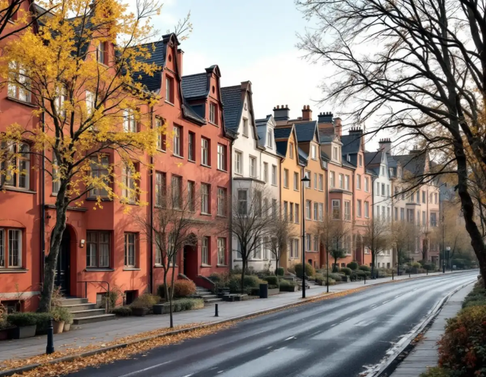
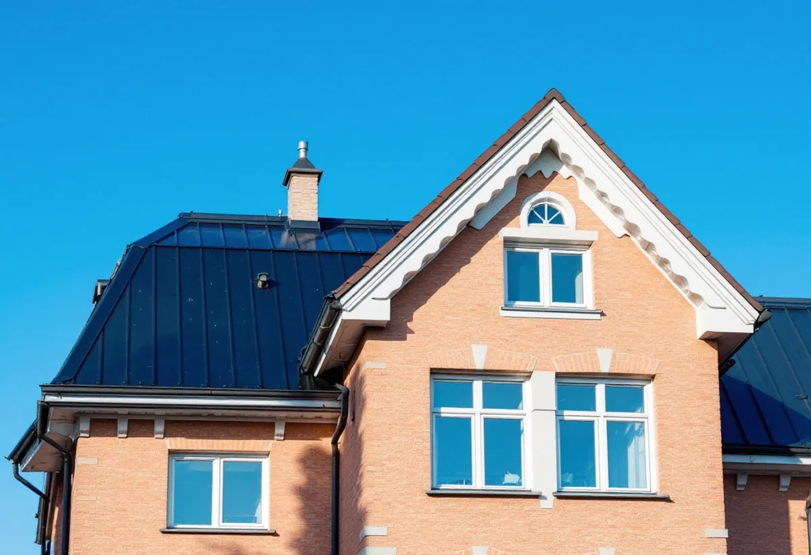
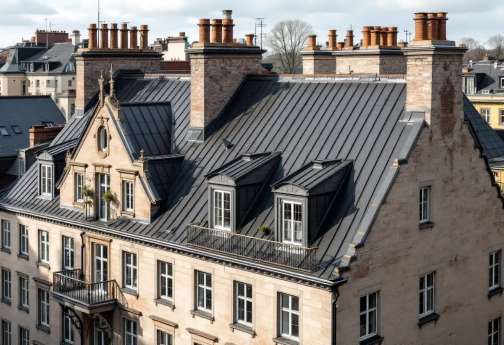

Besök
Gratis besök på taket och vinden med styrelsen.
I Vasastan bor de flesta i bostadsrätt, och det är föreningarnas styrelser som beställer takrenoveringar. Taken i stenstaden är branta och plåttäckta, och i Röda Bergen reglerade stadsplanen till och med var prydnadsgavlarna fick sitta. En takrenovering i Vasastan ska därför laga det som är slut utan att ändra det som gör kvarteret till det det är.

Stadens statistik för 2024 visar 12 579 bostäder i Västra Matteus och 8 889 i Gustav Vasa, två av Vasastans statistikområden. I Västra Matteus är 8 990 bostadsrätter och i Gustav Vasa 5 707. Där finns inga småhus alls i Västra Matteus och bara 14 i Gustav Vasa.
Taket är därför i regel föreningens. Det är styrelsen som beslutar, och underlaget ska kunna visas för medlemmarna på en stämma.

Röda Bergen är enligt staden innerstadens största miljö som helt präglas av 1910- och 1920-talens stadsbyggnadsidéer. Husen följer terrängen och gatorna är vinklade för att ge en intim närmiljö. I planen reglerades var prydnadsgavlar skulle finnas och att gårdarna skulle vara öppna och planterade.
När ett tak i Röda Bergen renoveras ska gavlarna och takfallen alltså behålla den form planen gav dem. Plåtdetaljer och beslag runt gavlarna görs om med samma profil, och kulören följer det som finns i dag.
Kvarteren Motorn och Vingen i norra Vasastaden byggdes i slutet av 1910-talet. De är ett tidigt exempel på kooperativt byggande med kommunalt stöd, där man ville lösa bostadsbristen med goda bostäder till rimliga priser i omsorgsfullt gestaltade miljöer.
Staden räknar bebyggelsen och gårdarna som ett stort kulturvärde att bevara. Det betyder inte att taket inte får renoveras, men att material, kulör och detaljer ska vara desamma när arbetet är klart.
Stora delar av Vasastan är klassisk stenstad. Staden beskriver taken där som sluttande, oftast plåttäckta och med en lutning på upp till 45 grader. Mot gatan har husen ofta en markerad takfot.
På sådana tak är det oftast plåten och skarvarna som är slut, inte konstruktionen. En renovering kan vara tvätt och ommålning, byte av enskilda plåtar där underlaget har tagit skada och nya beslag runt skorstenar, huvar och takfönster. Läs mer om plåttak och takmålning.
För flerbostadshus krävs bygglov när kulör eller material ändras på en fasad eller ett tak som vetter mot allmän plats. Kulören ska beskrivas enligt NCS-systemet, och staden kan begära en takplan som visar taket uppifrån med det befintliga och det nya.
Mot gården kan en ändring vara lovfri om vissa förutsättningar är uppfyllda. Är huset särskilt kulturhistoriskt värdefullt gäller utökad lovplikt. Stadsmuseets klassificeringskarta ger en första indikation.
Staden skriver att stenstaden kan fortsätta att utvecklas genom begränsade förändringar som vindsinredningar, prövade enligt varsamhetskraven i plan- och bygglagen. Stadsbyggnadskontorets vägledningar för vindsinredningar används som underlag vid prövningen.
Funderar föreningen på att inreda vinden är det klokt att vänta med en större takrenovering tills det är bestämt, så att taket inte görs två gånger. Ska vinden förbli kallvind kan vi däremot renovera direkt – och samtidigt se till att ventilationen under taket fungerar.
En kallvind behöver luft. Täpps ventilationen igen vid takfoten eller nocken kan fukt från lägenheterna kondensera under taket. Vid en takrenovering kontrollerar vi att luften kan röra sig under hela takytan, och föreslår åtgärder om den inte gör det. Föreningen får en beskrivning av det vi har sett, med foton från vinden och en enkel skiss över var luften ska komma in och ut.

Gratis besök på taket och vinden med styrelsen.
Plåt, skarvar, beslag och genomföringar fotograferas.
Skriftligt kostnadsförslag med det som måste göras nu och det som kan vänta.
Takplan och kulörbeskrivning om något ändras mot gatan.
Ommålning, tätning eller byte av plåt och beslag.
Foton och beskrivning till underhållsplanen.
Bor du i bostadsrätt ger arbete på husets tak inget rotavdrag enligt Skatteverket. Avdraget i en bostadsrätt gäller arbete inne i lägenheten som du själv ansvarar för enligt stadgarna, och taket är föreningens sak. Det är föreningen som beställer och betalar.
Småhus är mycket ovanliga i Vasastan. Äger du ett småhus i Vasastan räknar Skatteverket däremot reparation och byte av takpannor och hängrännor som rotarbete. Avdraget är 30 procent av arbetskostnaden, högst 50 000 kronor per person och år, och Geal drar det direkt på fakturan. Läs mer under rotavdrag för takarbete.
Kostnaden för en takrenovering i Vasastan påverkas av takets yta och lutning, om plåten ska målas eller bytas, antalet gavlar, skorstenar och takfönster, ställning mot gatan och om bygglov behövs. Läs mer om vad en takrenovering kostar.
Takbyte, besiktning och plåtarbeten.
Takläggare i Vasastan →Så fungerar en omläggning.
Takrenovering och takomläggning →Det här styr priset.
Vad kostar en takrenovering? →Räkna på takytan och ROT.
Takbyte-kalkylator →Stenstad, Lärkstaden, Diplomatstaden och Gärdet.
Takrenovering på Östermalm →Plåttak i stenstaden och funkis i Fredhäll.
Takrenovering på Kungsholmen →Råsunda, Stocksundstorp och Råsta.
Takrenovering i Solna →